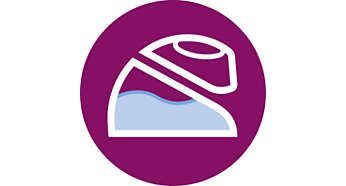
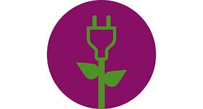
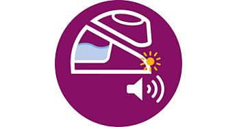

Scurta descriere
Statie de calcat Philips PerfectCare Elite Plus GC9682/80, 2700 W, Talpa T-ionicGlide, 165 g/min, Jet de abur vertical, Tehnologie OptimalTEMP, Negru/Auriu
Rezervor de apa mare pentru utilizare continua prelungita
Rezervorul de apa are o capacitate foarte ridicata de 2 l, oferindu-ti confortul unei utilizari continue de 2 ore, fara a fi necesar sa adaugi apa. Este totodata transparent, oferind vizibilitate de 360° asupra rezervorului pentru a vedea usor cantitatea de apa ramasa si a continua sa calci eficient cu abur. Cand trebuie adaugata apa, statia de calcat cu abur dispune de un orificiu mare de umplere, care iti permite sa umpli rezervorul cu apa de la robinet sau folosind o cana ori sticla in orice moment in timpul calcatului.
Economiseste energie cu modul ECO
Modul ECO iti permite sa economisesti energie, fara a compromite rezultatele calcarii. Modul ECO utilizeaza o cantitate redusa de abur, insa suficienta pentru a calca toate articolele vestimentare.
Talpa fierbinte poate fi lasata in siguranta pe masa de calcat
Tehnologia inovatoare OptimalTEMP garanteaza ca nu vor exista arsuri pe niciunul dintre articolele care pot fi calcate. Pe langa siguranta pe care ti-o asigura in timpul calcarii, inseamna si ca poti lasa talpa fierbinte a fierului de calcat direct pe masa de calcat din bumbac, fara a o deteriora deloc. Acest lucru contribuie la reducerea disconfortului incheieturilor mainilor, deoarece nu va trebui sa ridici la fel de des fierul de calcat de pe baza acestuia.
Sistem incorporat pentru curatare usoara, pentru performanta de lunga durata
Detartrarea periodica iti protejeaza fierul de calcat si mentine performanta aburului. Sistemul inteligent de detartrare si curatare este o functie integrata de detartrare si curatare care prelungeste durata de viata a statiei de calcat cu abur. Prin intermediul semnalelor luminoase si sonore, aparatul de calcat iti va reaminti de necesitatea curatarii si a detartrarii. Pentru a porni procesul, nu trebuie decat sa asezi aparatul de calcat pe recipientul de detartrare si de curatare inteligenta. Apa murdara si depunerile de calcar sunt colectate in aproximativ 2 minute, iar la sfarsit statia de calcat cu abur va emite un semnal sonor, indicand ca utilizarea poate fi reluata.